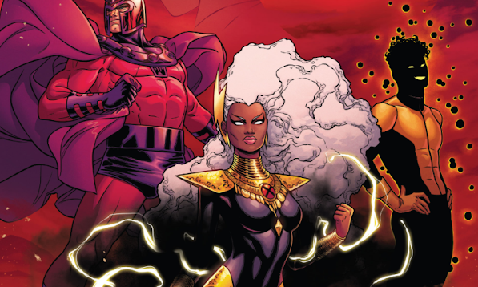

X-Men: Marvel anuncia títulos adicionais do relançamento
Marvel anuncia títulos adicionais do seu relançamento de X-Men: Fênix, X-Factor, Tempestade, NYX, X-Force e Wolverine
 NOME AUTOR
NOME AUTOR 30 fev 2024COMICS
30 fev 2024COMICS
Esses quadrinhos servirão como um "fácil ponto de entrada" para personagens queridos pelos fãs.
No entanto, detalhes mais específicos ainda não foram revelados.
O relançamento virá com três séries em quadrinhos principais: Fabulosos X-Men, X-Men e Excepcionais X-Men.
Fabulosos X-Men é de Gail Simone e David Marquez e trará a seguinte equipe: Wolverine, Vampira, Gambit, Noturno, Jubileu e Oya.

Na trama, Vampira, Gambit e outros se tornarão “Heróis Fora da Lei” em Nova Orleans. Há a promessa de que esse arco colocará os personagens de volta ao mundo real com não-mutantes.
X-Men é de Jed MacKay e Ryan Stegman e mostrará a seguinte formação: Ciclope, Quentin Quire, Fera, Magia, Magneto, Psylocke e Fanático.
A série mostrará Scott Summers voltando para casa no Alasca, liderando uma equipe que usa a capacidade do Cérebro para encontrar mutantes necessitados.
Por fim, Excepcionais X-Men é de Eve Ewing e Carmen Carnero e contará com uma nova geração de mutantes, liderados por Emma Frost e Kitty Pryde.
Nesse caso, é situada em Chicago, seguindo Kitty Pryde enquanto tenta deixar seu passado mutante para trás enquanto trabalha como barista, mas conhecer um grupo de mutantes novatos sem orientação a traz de volta como professora. Emma Frost, então, surge para ajudar a liderar esses jovens mutantes - Bronze, Axo e Melee.